1为什么还需要一种新表示？
第2章学习了旋转矩阵、欧拉角和轴角。先回顾它们在存储、运算与边界条件上的特点，再理解四元数的用途（课件 p3-12）：
| 表示 | 参数个数 | 主要问题 |
|---|---|---|
| 旋转矩阵 | 9（冗余 6 个） | 效率低：3 个自由度却要 9 个数；数值稳定性：需要一直保持正交性，误差会累积 |
| 欧拉角 | 3 | 万向锁（第 2 章推导过）；组合与求逆都复杂 |
| 轴角 | 3-4 | 组合复杂；边界情况（θ=0、θ=π）不唯一 |
单位四元数提供紧凑且便于求逆、复合与插值的表示，局部没有欧拉角的万向锁。它仍有单位模长约束和$q/-q$双重覆盖，使用时要处理符号与接口约定。
2四元数：复数的四维表亲
本章使用Hamilton乘法、实部在前的$(w,x,y,z)$顺序、右手正向与列向量主动旋转。单位四元数$q$的旋转作用为$q(0,\mathbf v)q^*$。先执行$q_1$再执行$q_2$，组合是$q_2q_1$。所有角度用弧度。
先回忆复数：$a + bi$，其中 $i^2 = -1$。1843年，哈密顿（Hamilton）提出四元数，将复数的思路推广到四维：从二维复数推广到四维四元数——
四元数（Quaternion）定义为：$q = w + xi + yj + zk$，其中虚数单位满足：
$$ i^2 = j^2 = k^2 = ijk = -1 $$ 以及反交换性质：$ij = k = -ji,\quad jk = i = -kj,\quad ki = j = -ik$。
三个虚数单位的关系可以用一个转盘记忆：$i \to j \to k \to i$ 顺时针乘是正的，逆时针乘是负的。
四元数乘法中的叉积项使一般乘法不可交换，这与三维旋转组合通常依赖先后顺序相吻合。例如先绕X再绕Y，通常与先绕Y再绕X得到不同朝向。虚数单位$i$本身若用于$qvq^*$表示的是绕X轴半圈，复平面中的90°类比与这里的三维旋转角应分别理解。
常用向量形式书写：$q = (w, \mathbf{v})$，$\mathbf{v} = (x, y, z)$——实部 $w$ 加一个三维向量部分。
3四元数运算：Hamilton乘积（向量形式）
四元数核心运算是乘法，通常称Hamilton乘积。课件p15给出其点积与叉积形式：
$$ q_1 q_2 = (w_1 w_2 - \mathbf{v}_1^{\top} \mathbf{v}_2,\; w_1 \mathbf{v}_2 + w_2 \mathbf{v}_1 + \mathbf{v}_1 \times \mathbf{v}_2) $$
按实部和虚部分开看：实部 = 两个实部相乘减点积；虚部 = 两个实部互乘向量部分加叉积。注意由于叉积的存在，$q_1 q_2 \neq q_2 q_1$——四元数乘法不可交换。
其余运算与复数完全平行：
| 运算 | 定义 | 说明 |
|---|---|---|
| 共轭 | $q^* = (w, -\mathbf{v})$ | 虚部取反，与复数一致 |
| 模长 | $\|q\|^2 = w^2 + \mathbf{v}^\top \mathbf{v} = qq^* = q^*q$ | 「长度」的平方 |
| 逆 | $q^{-1} = \dfrac{q^*}{\|q\|^2}$ | 模长公式的直接推论 |
其中模长公式的写法 $qq^* = q^*q$ 说明了一个具体性质：虽然乘法不可交换，但 $q$ 和自己的共轭是可交换的。
4单位四元数与旋转
先认识两个特殊子类（笔记定义）：
- 单位四元数：$\|q\| = 1$。可表示三维旋转，且有 $q^{-1} = q^*$；
- 纯四元数：$w = 0$，即 $q = (0, \mathbf{v})$。可表示三维向量。
4.1 从轴角到四元数：用半角编码旋转
回忆第 2 章的欧拉定理：任意旋转 = 绕单位轴 $\hat{\omega}$ 转 $\theta$。把这个 $(\hat{\omega}, \theta)$ 打包进四元数（课件 p17）：
$$ q = \left[\cos\frac{\theta}{2},\ \sin\frac{\theta}{2}\,\hat{\omega}\right] $$
旋转向量用轴与角描述同一个旋转；四元数则把半角的余弦存为实部、半角的正弦乘单位轴存为虚部。这给出与旋转向量不同的旋转编码。反向关系为：
$$ \theta = 2\arccos(w), \qquad \hat{\omega} = \frac{\mathbf{v}}{\sin(\theta/2)} \quad (|\sin(\theta/2)| > 0) $$
直接用$2\arccos(w)$得到的角可落在$[0,2\pi]$。若需要最短旋转角$[0,\pi]$，先在$q$与$-q$中选择$w\ge0$的表示；转角为$\pi$时正反轴都可表示同一旋转。$d_{S^3}$表示球面距离，区别于常见的内积记号。
若 $q=(1,0,0,0)$ 或 $q=(-1,0,0,0)$，都表示恒等旋转：约定 $\theta=0$，轴可任选单位向量，例如 $(1,0,0)$。非零角时先归一化四元数，并将 $w$ 截到 $[-1,1]$ 以避免浮点误差。
4.2 双重覆盖：一个旋转，两个四元数
四元数与旋转不是一一对应，而是二对一——这就是「双重覆盖（double-covering）」：
$$-q=\left[-\cos\frac{\theta}{2},-\sin\frac{\theta}{2}\hat\omega\right]=\left[\cos\left(\pi-\frac{\theta}{2}\right),\sin\left(\pi-\frac{\theta}{2}\right)(-\hat\omega)\right]$$
即：$q$ 与 $-q$ 表示同一个旋转（$-q$ 等价于「轴翻转 + 旋转 $2\pi - \theta$」）。
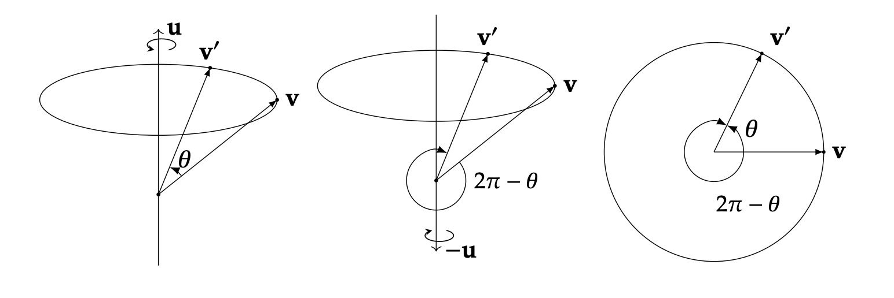
从单位四元数球面$S^3$到$SO(3)$的映射把每对对跖点$q,-q$对应到同一旋转。沿一条持续转动轨迹可保持四元数连续，但无法在全部旋转上选择唯一且处处连续的符号。
4.3 旋转组合 = 四元数乘法
用于旋转组合的性质（课件 p18）：先转 $q_1$ 再转 $q_2$，等价于一个四元数 $q_2 q_1$：
$$ q_2 (q_1 x q_1^*) q_2^* = (q_2 q_1)\, x\, (q_1^* q_2^*) $$
四元数乘法满足结合律，因此可将连续旋转合并为一个乘积。结果中的右侧旋转先执行；例如$R(q_2q_1)=R(q_2)R(q_1)$。朴素四元数复合所需算术次数比3×3矩阵复合少，具体效率取决于实现。
单位四元数有4个分量与1个单位长度约束，因而具有3个自由度。几何上它们组成嵌在四维欧几里得空间中的三维单位球面$S^3$。
5向量旋转：x′ = qxq⁻¹
用四元数旋转三维向量 $\mathbf{v}$ 的步骤（课件 p18）：
- 把向量包装成纯四元数：$v = [0, \mathbf{v}]$；
- 计算纯四元数$v\prime=q(0,\mathbf v)q^*$，再取三维虚部得到$\mathbf v\prime$。此处$q$为单位四元数，因此$q^{-1}=q^*$。
为什么成立？笔记给出了完整的展开。设单位四元数 $q = [w, \mathbf{r}]$（满足 $w^2 + \|\mathbf{r}\|^2 = 1$），展开 $qvq^*$：
$$ \begin{aligned} qvq^* &= [w, \mathbf{r}]\,[0, \mathbf{v}]\,[w, -\mathbf{r}] \\ &= [-\mathbf{r}\cdot\mathbf{v},\ w\mathbf{v} + \mathbf{r}\times\mathbf{v}]\,[w, -\mathbf{r}] \\ &= [0,\ (1-2\|\mathbf{r}\|^2)\mathbf{v} + 2(\mathbf{r}\cdot\mathbf{v})\mathbf{r} + 2w(\mathbf{r}\times\mathbf{v})] \end{aligned} $$
（中间用到了叉乘展开式 $a\times (b\times c) = (a\cdot c)b - (a\cdot b)c$ 和单位约束。）
现在代入 $w = \cos\frac{\theta}{2}$、$\mathbf{r} = \sin\frac{\theta}{2}\,\mathbf{u}$，利用半角公式：
- $1 - 2\|\mathbf{r}\|^2 = 1 - 2\sin^2\frac{\theta}{2} = \cos\theta$
- $2(\mathbf{r}\cdot\mathbf{v})\mathbf{r} = (1 - \cos\theta)(\mathbf{u}\cdot\mathbf{v})\mathbf{u}$
- $2w(\mathbf{r}\times\mathbf{v}) = \sin\theta\,(\mathbf{u}\times\mathbf{v})$
代回得：
$$ \mathbf{v}' = \cos\theta\,\mathbf{v} + (1-\cos\theta)(\mathbf{u}\cdot\mathbf{v})\mathbf{u} + \sin\theta\,(\mathbf{u}\times\mathbf{v}) $$
该展开与罗德里格斯公式完全等价。四元数尤其便于旋转复合与插值；实际旋转大量向量时，把它转换为矩阵也常有计算优势。原课件p19—20保留Stanford CS348A的证明来源。
6四元数与旋转矩阵互转
6.1 四元数 → 旋转矩阵
对单位四元数 $q = [w, (x, y, z)]$，对应的旋转矩阵是（笔记 + 课件 p25）：
$$ R(q) = \begin{bmatrix} 1 - 2y^2 - 2z^2 & 2xy - 2zw & 2xz + 2yw \\ 2xy + 2zw & 1 - 2x^2 - 2z^2 & 2yz - 2xw \\ 2xz - 2yw & 2yz + 2xw & 1 - 2x^2 - 2y^2 \end{bmatrix} $$
证明思路很直接：把三个基向量 $\mathbf{e}_1, \mathbf{e}_2, \mathbf{e}_3$ 分别代入 $qvq^*$，得到的三列就是 $R$。这也正是第 1 章作业 1 里 quat_to_mat 的实现方式。
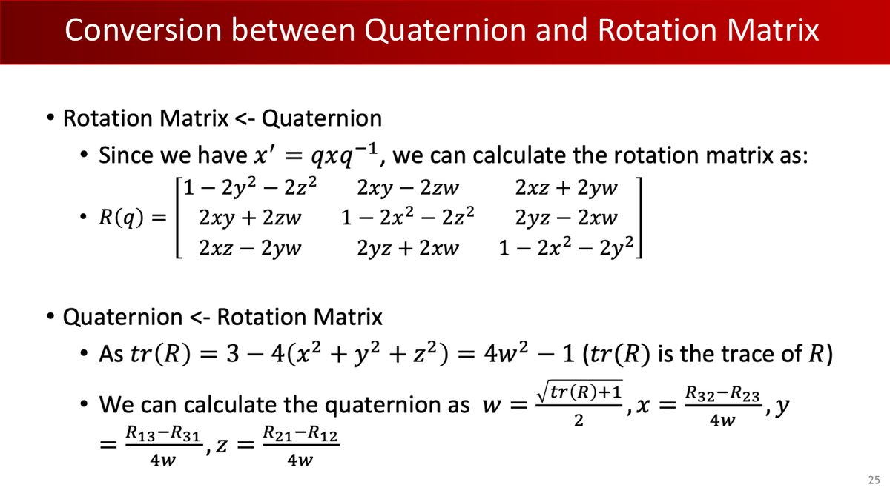
6.2 旋转矩阵 → 四元数
反向转换从迹入手：由上面的公式可得 $\mathrm{tr}(R) = 3 - 4(x^2+y^2+z^2) = 4w^2 - 1$，于是（$w \neq 0$ 时）：
$$ w = \frac{\sqrt{\mathrm{tr}(R)+1}}{2}, \qquad x = \frac{R_{32}-R_{23}}{4w}, \qquad y = \frac{R_{13}-R_{31}}{4w}, \qquad z = \frac{R_{21}-R_{12}}{4w} $$
接近半圈旋转时$w$接近0，不能直接除以$4w$。稳定实现根据对角项选择较大的四元数分量，再恢复其他分量并归一化。作业应包含绕X、Y、Z各转180°的测试。
7四元数的距离
两个四元数「差多远」？把单位四元数看成 $S^3$ 球面上的点，距离就是球面角度（笔记 + 课件 p26）：
$$ \langle p, q \rangle = \arccos(p \cdot q) $$
可从相对旋转理解：从 $p$ 到 $q$ 的相对旋转是 $\Delta q = q p^*$，其实部正好是两四元数（视为 4D 向量）的点积：$\mathrm{Re}(\Delta q) = p \cdot q = \cosd_{S^3}(p,q)$。
而旋转之间的距离，考虑双重覆盖后取绝对值（$q$ 与 $-q$ 同一旋转）：
$$ \mathrm{dist}(p, q) = 2\arccos(|p \cdot q|) = 2\min\{d_{S^3}(p,q),\ d_{S^3}(p,-q)\} $$
计算旋转差异时，先在$q$与$-q$中选较近代表，再将球面夹角乘2。实现前保证单位模长，并把绝对点积裁剪至$[0,1]$。这对应作业函数quat_relative_angle。
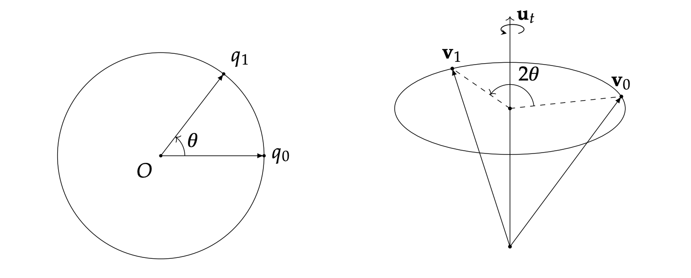
8四元数插值：从 Lerp 到 Slerp
机器人动画、轨迹生成里最常见的问题：给定两个姿态 $q_1, q_2$，求它们之间的平滑过渡。下面逐步比较三种插值方法：
8.1 Lerp：朴素的线性插值
$$ q(t) = (1-t)q_1 + tq_2 $$
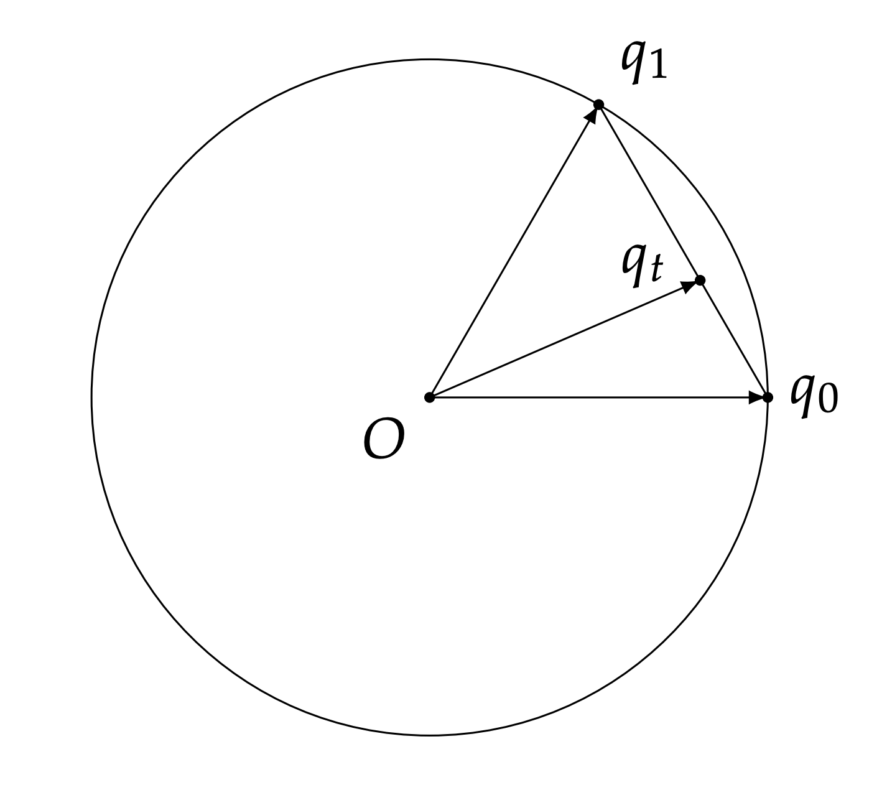
先看模长：在不同端点之间的内部插值结果通常不再是单位四元数；两端点本身仍为单位。若端点互为反号，直线在中点经过零四元数，不能直接归一化。
8.2 Nlerp：补一个归一化
$$ q(t) = \frac{(1-t)q_1 + tq_2}{\|(1-t)q_1 + tq_2\|} $$
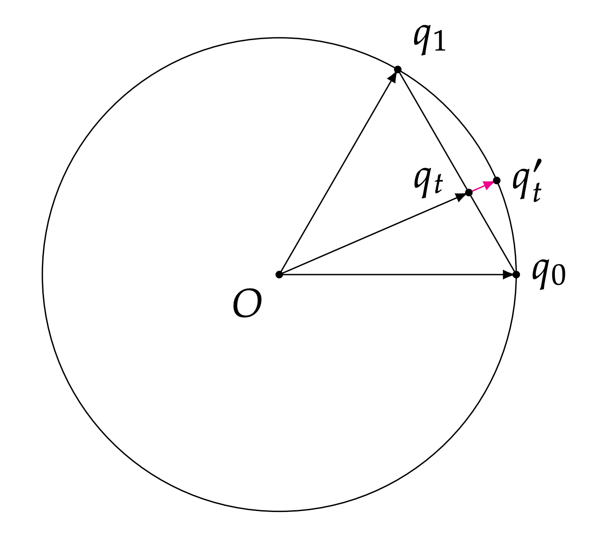
再看速度：Lerp/Nlerp 切分的是弦长而非弧长——等时间间隔下，旋转的角速度不均匀（中间快、两头慢）：
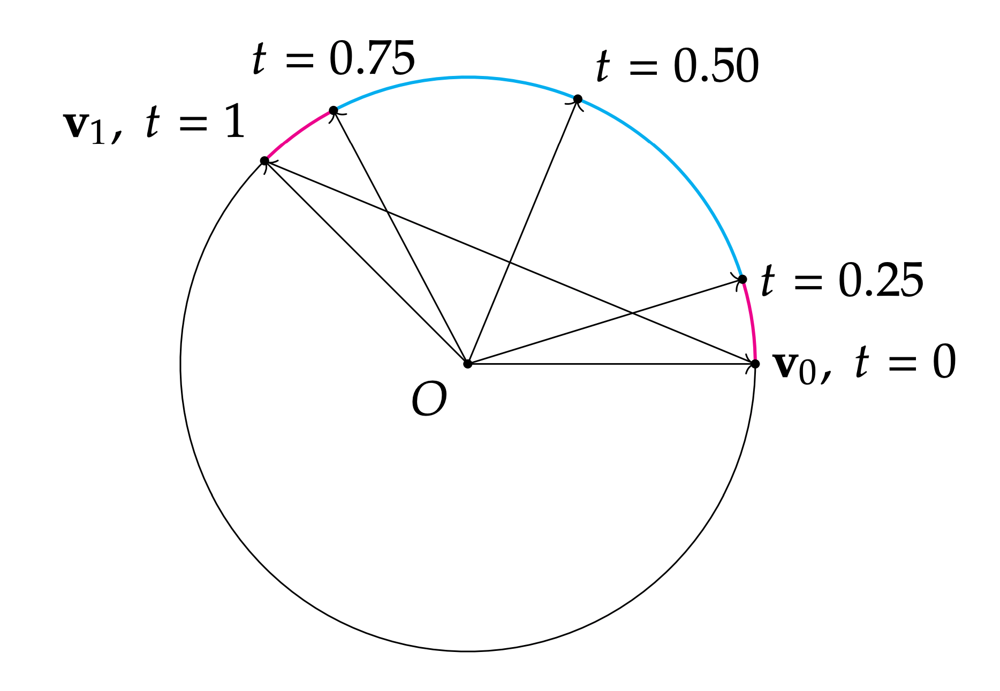
8.3 Slerp：沿球面大圆弧插值
把插值从「割线」移到「球面大圆弧」（测地线，geodesic）上（课件 p28-30）：
$$ q(t) = \frac{\sin((1-t)\theta)}{\sin\theta}\, q_1 + \frac{\sin(t\theta)}{\sin\theta}\, q_2, \qquad \theta = \arccos(q_1 \cdot q_2) $$
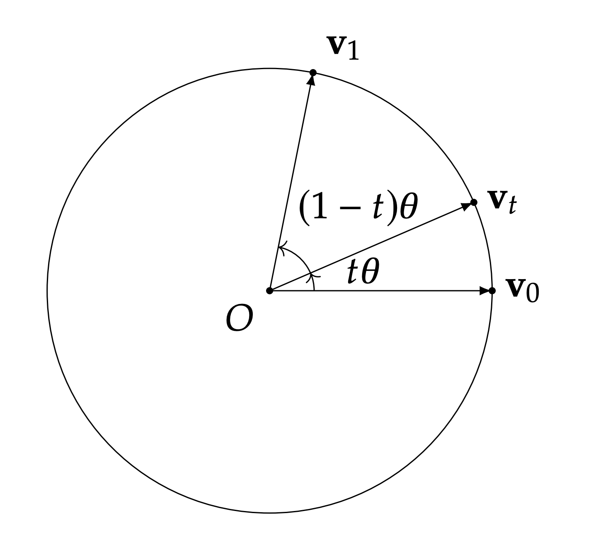
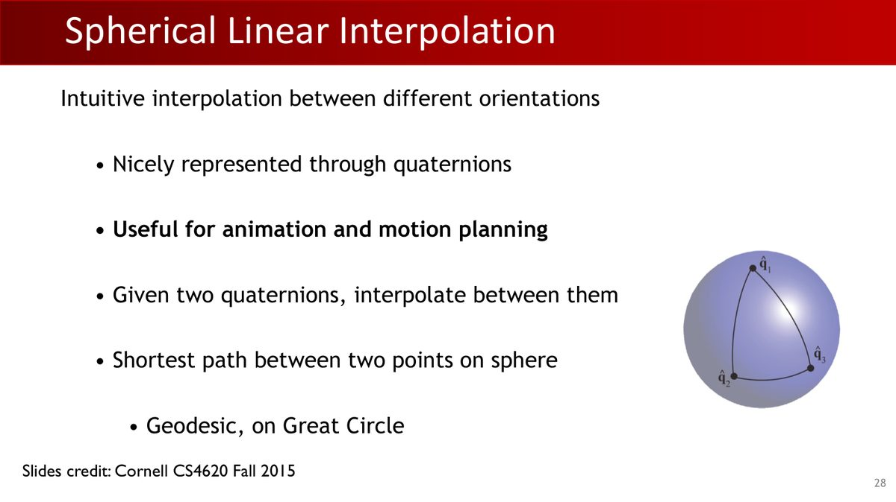
Slerp 的系数可以用正弦定理推导（笔记 + 课件）：把 $q_1, q_2$ 看作平面内夹角 $\psi$ 的两个单位向量，$\mathbf{v}(t) = w_0\mathbf{v}_0 + w_1\mathbf{v}_1$，由 $\frac{\sin\alpha}{w_1} = \frac{\sin\beta}{w_0} = \sin\psi$ 得到：
$$ w_0 = \frac{\sin\beta}{\sin\psi}, \qquad w_1 = \frac{\sin\alpha}{\sin\psi} $$
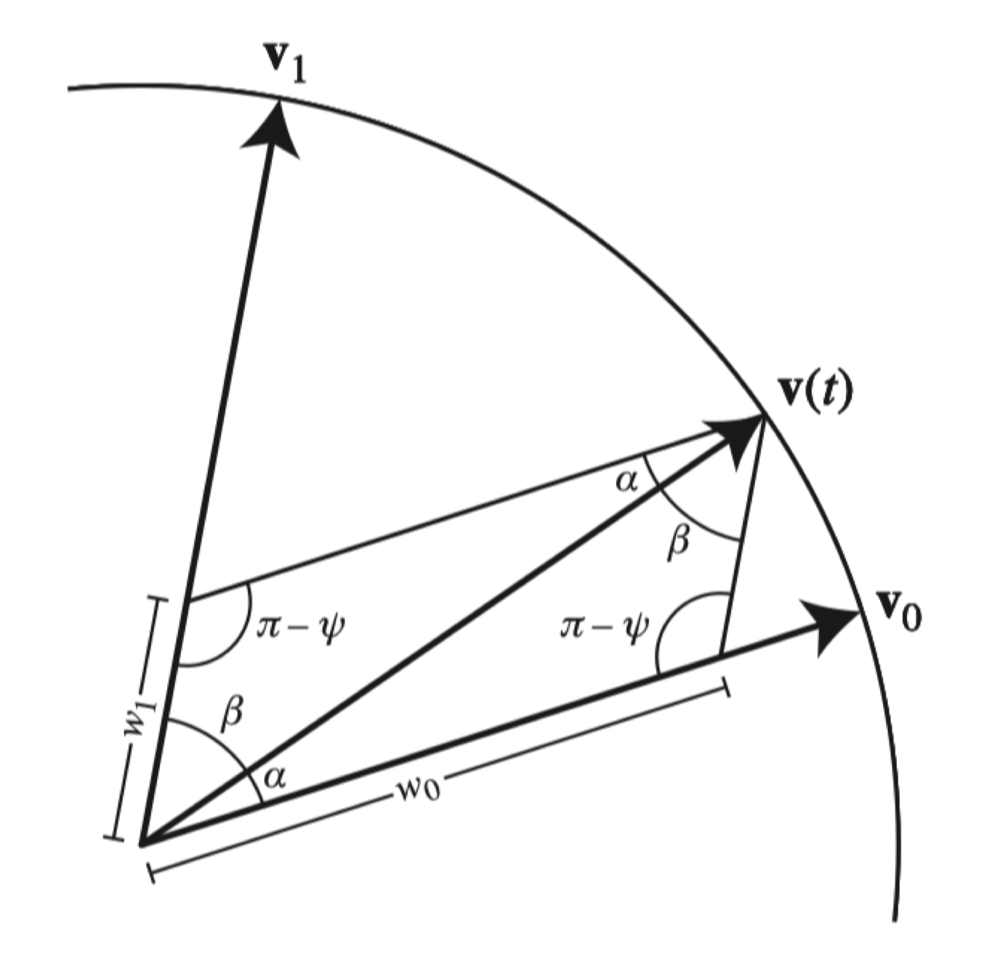
8.4 两个工程细节（课件 p31）
- 夹角趋近 0：$\sin\theta \approx \theta$，Slerp 退化为线性插值（直接用 Lerp/Nlerp 即可，避免除 0）；
- 最短弧与双重覆盖：若$q_1\cdot q_2<0$，先把$q_2$整体取反，再按球面夹角$\alpha=\arccos(q_1\cdot q_2)$插值。对跖的$q$与$-q$其实是同一物理旋转；三维相对转角180°对应球面夹角90°，此时物理最短路径可有两种。
9球面均匀采样
数据增强、随机初始化、位姿估计的采样都需要的操作：随机生成一个旋转，且要「均匀」——各个方向的概率应一致（课件 p32）。
在$S^3$上均匀采样单位四元数，再经旋转映射得到$SO(3)$的均匀旋转分布。关键是球面均匀测度在四元数乘法下保持不变，并通过双重覆盖对应到旋转不变测度；距离关系帮助建立直觉，均匀性的依据则来自上述测度不变性。
那么如何在 $S^3$ 上均匀采样？可以从正态分布采样：
从四维标准正态分布 $\mathcal{N}(0, I_{4\times4})$ 采样一个向量，归一化，就得到均匀分布的单位四元数。
理由：标准正态分布各向同性（所有方向等概率），归一化后落在球面上的概率自然均匀。
这也正是第 1 章作业 1 里 uniform_random_quat 的实现方式（随机 4 维正态向量，除以模长）。
旋转轴样本均值接近零可作为初步检查。均匀性来自四维标准正态的各向同性及旋转映射的不变性。采样后的每个四元数还应满足单位模长。
10表示对比与工程约定
四种旋转表示的对比（课件 p35-37）：
| 表示 | 求逆 | 组合 | 局部连续性 （SO(3) 上任何局部移动都能由定义域的局部移动实现？） |
|---|---|---|---|
| 旋转矩阵 | ✔ | ✔（矩阵连乘） | N/A（9 个数冗余 6 个约束） |
| 欧拉角 | 复杂 | 复杂 | 万向锁处局部映射退化 |
| 轴角 | ✔ | 复杂 | ?（多数情况 ✔，边界如 0 度时不行） |
| 四元数 | ✔（共轭） | ✔（乘法） | 局部无万向锁；全局选择单一符号仍有边界 |
工程上各自的分工（课件 p36，引用 CVPR'19《On the Continuity of Rotation Representations》）：用旋转矩阵定义概念、用欧拉角可视化、用轴角可视化并算导数、用四元数写高效代码。
旋转矩阵的9个元素给出SO(3)在欧几里得空间中的连续编码，网络输出仍需映射到满足正交性与行列式条件的矩阵。欧拉角、轴角和选定符号的四元数在全局边界处可能跳变，训练时需要处理这些边界，并结合任务选择表示。
CVPR 2019 的旋转表示论文讨论了 6D 表示：取旋转矩阵前两列，解码时做 Gram-Schmidt 正交化。编码旋转与解码任意预测向量是不同方向；后者需排除零向量、共线等退化输入。6D/9D 可用于网络输出，四元数可用于存储与组合，具体选择取决于任务。
工程约定：wxyz 还是 xyzw？
不同库或同一库的不同接口可能采用不同四元数分量顺序。下面列出本教程与SciPy的具体约定，使用时应查接口文档：
| 顺序 | 本课约定／具体接口 |
|---|---|
| (w, x, y, z) 实部在前 | 本教程与作业 1 的约定 |
| (x, y, z, w) 实部在后 | scipy.spatial.transform.Rotation.from_quat 的默认顺序；设置 scalar_first=True 可改为实部在前 |
四元数的效率数字（课件 p22）：存储 4 个数 vs 矩阵 9 个；乘法 16 次乘法 + 12 次加法 vs 矩阵 27 + 18；且旋转矩阵在连续乘法中会累积数值误差破坏正交性，四元数则只需偶尔归一化。
11运动规划入门：配置空间
配置$q$描述机器人几何形状与位置，例如各关节角；动力学状态还可能包括关节速度。相同配置可以静止，也可以快速通过。本章先研究几何无碰撞路径，后续控制再讨论时间、速度与跟踪。
利用已经学过的位姿与关节配置，继续考虑：机器人怎么在障碍物之间规划路径？（课件 p38-43）
11.1 配置空间（C-space）
配置空间：系统的所有可能状态组成的集合（对机械臂而言，就是所有可能的关节角度组合）。它被障碍物切成两块：
- $C$：配置空间（所有状态）；
- $C_{\text{free}}$：自由空间——有效（无碰撞）状态；
- $C_{\text{obs}}$：障碍空间——碰撞状态；满足 $C_{\text{free}} \cup C_{\text{obs}} = C$，$C_{\text{free}} \cap C_{\text{obs}} = \varnothing$。
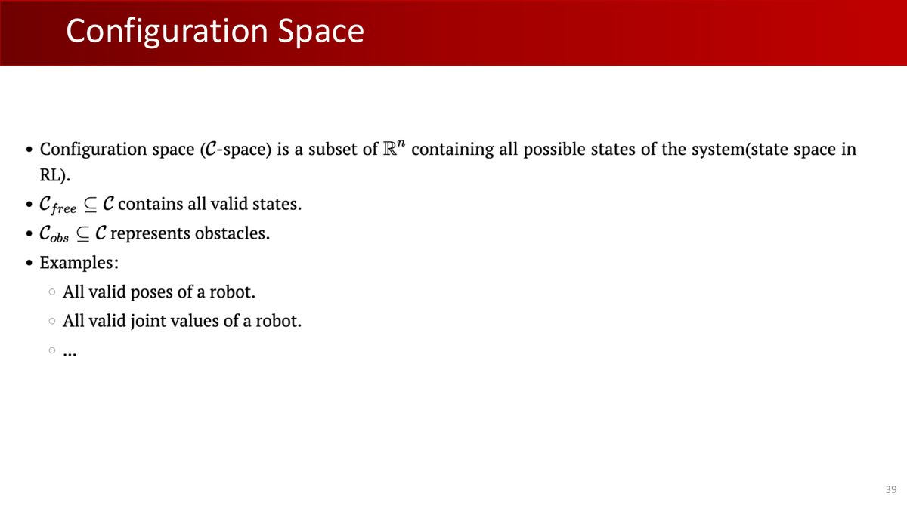
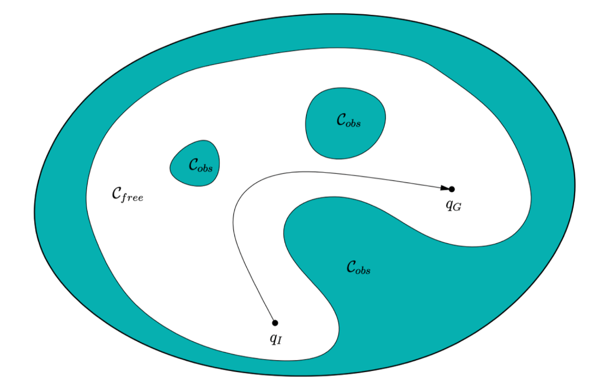
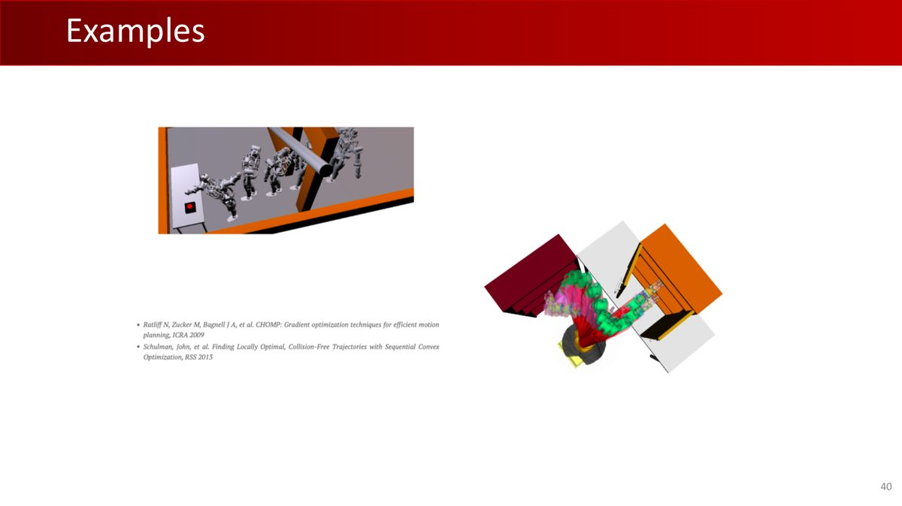
11.2 问题定义与挑战
给定：自由空间 $C_{\text{free}}$、起始状态 $q_{\text{start}}$、目标状态 $q_{\text{goal}}$。目标：计算一系列动作使机器人从起点安全到达终点。
（注意：这里的 $q$ 表示配置空间中的点，在本节用于记录关节配置；阅读时按所在小节区分其含义。对机械臂来说，$q$ 就是关节角度组合 $(\theta_1, \dots, \theta_n)$。）
三大挑战：
- 避障：路径必须始终在 $C_{\text{free}}$ 内；
- 长规划范围：要考虑较远目标或多步后果，路径和约束更复杂；课件的Long planning horizon描述需要考虑的规划跨度；算法计算时间是另一项指标。
- 高维空间：多关节机器人的配置空间维数很高（维度诅咒）。
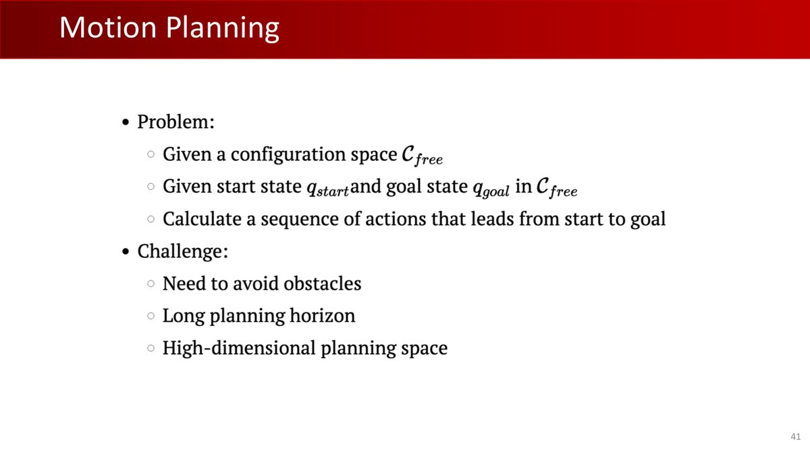
课件p43给出基本流程：URDF描述每个连杆的碰撞几何；FK根据配置$q$把几何放到相应位置；碰撞查询判断该配置是否有效。具体引擎可能采用网格、球体等不同近似。几何配置空间主要描述位置与形状。把无碰撞路径用于实际运动，还需考虑速度、动力学和控制条件。
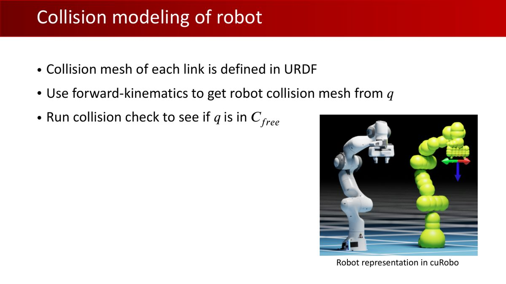
12本章小结
| 核心概念 | 一句话解释 |
|---|---|
| 四元数定义 | $q = w + xi + yj + zk$，$i^2=j^2=k^2=ijk=-1$，复数的四维推广 |
| Hamilton乘积（向量形式） | 四元数乘法 = 实部相乘减点积 + 叉积，不可交换 |
| 单位四元数 ↔ 旋转 | $q=[\cos\frac{\theta}{2}, \sin\frac{\theta}{2}\hat{\omega}]$，双重覆盖（$q$ 与 $-q$ 同一旋转） |
| 向量旋转 | $x' = qxq^{-1}$，展开后与罗德里格斯公式逐项等价 |
| Slerp | 球面大圆弧插值，角速度恒定；注意点积为负时取 $-q$ |
| 球面均匀采样 | $\mathcal{N}(0,I_4)$ 采样后归一化（各向同性） |
| 配置空间 | 所有状态的集合，分为 $C_{\text{free}}$ 与 $C_{\text{obs}}$，是运动规划的舞台 |
第4章将学习配置空间中的PRM、RRT 等经典运动规划算法，以及机器人控制的基础——从开环到 PID。届时第 1 章作业 1 的 FK、本章的四元数与配置空间将全部派上用场。
13动手实践
本章的动手实践对应第1章作业1：作业 1 的 11 个四元数函数全部是本章内容。读完推导后，可以再次检查每个函数的输入、公式和边界条件。建议回看一遍 rotation.py，逐函数对号入座：
| 作业 1 函数 | 本章位置 | 关键公式 |
|---|---|---|
quat_multiply | §3 | Hamilton乘积（向量形式） |
quat_normalize / quat_conjugate | §3 | 模长 / 共轭 |
quat_rotate | §5 | $qvq^*$ 展开式 |
quat_relative_angle | §7 | $2\arccos(|p\cdot q|)$ |
interpolate_quat | §8 | Slerp + 负点积取反 |
quat_to_mat / mat_to_quat | §6 | 标准公式 / trace 法 |
quat_to_axis_angle / axis_angle_to_quat | §4.1 | $\theta = 2\arccos(w)$ |
uniform_random_quat | §9 | 正态采样归一化 |
练习 1：验证 Slerp 的角速度均匀性（15 分钟）
写一个小实验，比较 Nlerp 与 Slerp 在等时间间隔下的旋转角度变化：
import numpy as np
def unit_quat(q):
q = np.array(q, dtype=float, copy=True)
if q.shape != (4,) or not np.all(np.isfinite(q)):
raise ValueError("四元数必须包含四个有限分量")
norm = np.linalg.norm(q)
if norm == 0:
raise ValueError("零四元数不能表示旋转")
return q / norm
def slerp(q1, q2, t):
q1, q2 = unit_quat(q1), unit_quat(q2)
dot = float(q1 @ q2)
if dot < 0:
q2, dot = -q2, -dot
dot = np.clip(dot, 0.0, 1.0)
if dot > 1 - 1e-8:
return unit_quat((1-t)*q1 + t*q2)
theta = np.arccos(dot)
return unit_quat((np.sin((1-t)*theta)*q1 + np.sin(t*theta)*q2)
/ np.sin(theta))
def nlerp(q1, q2, t):
q1, q2 = unit_quat(q1), unit_quat(q2)
if q1 @ q2 < 0:
q2 = -q2
return unit_quat((1-t)*q1 + t*q2)
# 两个相差 120° 的旋转（绕 z 轴）
q1 = np.array([np.cos(0), 0, 0, np.sin(0)])
q2 = np.array([np.cos(np.pi/3), 0, 0, np.sin(np.pi/3)]) # θ/2 = 60°
ts = np.linspace(0, 1, 11)
angles_slerp = [2*np.arccos(np.clip(np.abs(slerp(q1,q2,t) @ q1), -1, 1)) for t in ts]
angles_nlerp = [2*np.arccos(np.clip(np.abs(nlerp(q1,q2,t) @ q1), -1, 1)) for t in ts]
diff_s = np.diff(angles_slerp); diff_n = np.diff(angles_nlerp)
print("Slerp 相邻间隔:", np.round(diff_s, 4)) # 均匀！
print("Nlerp 相邻间隔:", np.round(diff_n, 4)) # 中间大两头小练习 2：验证双重覆盖与相对角度（10 分钟）
# q 与 -q 表示同一旋转：相对角度应为 0
q = np.array([np.cos(np.pi/6), np.sin(np.pi/6), 0, 0]) # 绕 x 转 60°
rel = 2*np.arccos(np.clip(np.abs(q @ (-q)), -1, 1))
print("q 与 -q 的旋转距离:", np.round(rel, 6), "（期望 0）")
assert rel < 1e-6
# 用 rotation.py 的 quat_to_mat 验证：R(q) == R(-q)
def quat_to_mat(q):
w, x, y, z = q
return np.array([
[1-2*y*y-2*z*z, 2*x*y-2*w*z, 2*w*y+2*x*z],
[2*x*y+2*w*z, 1-2*x*x-2*z*z, 2*y*z-2*w*x],
[2*x*z-2*w*y, 2*w*x+2*y*z, 1-2*x*x-2*y*y]])
assert np.allclose(quat_to_mat(q), quat_to_mat(-q))
print("✓ R(q) 与 R(-q) 完全相同")练习 3：均匀采样体检（10 分钟）
用 §9 的方法采样 10000 个随机旋转，检验「旋转轴是否真的各向同性」：
samples = np.random.randn(10000, 4)
samples /= np.linalg.norm(samples, axis=1, keepdims=True)
axes = samples[:, 1:] / np.linalg.norm(samples[:, 1:], axis=1, keepdims=True)
mean = axes.mean(axis=0)
print("旋转轴均值（期望 ≈ 0 向量）:", np.round(mean, 4))三个练习共约 35 分钟。本章推导较多，可以分两次阅读：第一次 §1-§7（四元数本体），第二次 §8-§11（插值与规划）。遇到推导困难时，可阅读 Krasjet《Quaternion》对应章节，作为补充。
旋转轴均值接近零是初步检查；判断分布是否均匀，还需结合其他统计检查。例如，可以检查随机旋转把固定单位向量转到球面后是否各向同性，同时核对采样方法本身的数学依据。
附A术语表
| 术语 | 解释 |
|---|---|
| 四元数（Quaternion） | $q = w + xi + yj + zk$，复数的四维推广，$i^2=j^2=k^2=ijk=-1$ |
| Hamilton乘积（向量形式） | 四元数的标准乘法；向量形式由实部、点积和叉积构成，一般不可交换 |
| 纯四元数 | 实部为 0 的四元数 $(0, \mathbf{v})$，表示三维向量 |
| 单位四元数 | 模长为 1 的四元数，表示三维旋转，$q^{-1} = q^*$ |
| 双重覆盖 | 一个旋转对应两个四元数（$q$ 与 $-q$），单位四元数在 $S^3$ 上 |
| Lerp / Nlerp / Slerp | 线性插值 / 归一化线性插值 / 球面线性插值（沿大圆弧，角速度恒定） |
| 测地线（Geodesic） | 曲面上两点间的最短路径，球面上即大圆弧 |
| 配置空间（C-space） | 系统所有可能状态的集合，被划分为 $C_{\text{free}}$ 与 $C_{\text{obs}}$ |
| 自由空间 $C_{\text{free}}$ | 无碰撞的有效状态集合，运动规划要求路径全程位于其中 |
| 6D 表示 | 取旋转矩阵前两列并正交化的连续表示（CVPR 2019），可用于学习模型的旋转输出 |
附B课件 44 页完整索引
原始 Lecture 3 课件共 44 页（GitHub 原文件）。下表逐页列出内容及在本教程中的位置：
| 页码 | 页面内容 | 在教程中的位置 |
|---|---|---|
| p1 | 封面：Lecture 3 - Robotics II | 封面区 |
| p2 | 主题页：SO(3) | §1 开头 |
| p3 | 主题页：旋转矩阵 | §1（回顾） |
| p4 | SO(n) 定义回顾 | §1（回顾，详见第 2 章 §7） |
| p5 | 旋转矩阵的两个问题：效率、数值稳定性 | §1 |
| p6 | 欧拉角非常直观（回顾） | §1（回顾） |
| p7 | 欧拉角（回顾配图） | §1（回顾） |
| p8 | 万向锁（回顾推导） | §1（回顾） |
| p9 | 主题页：轴角参数化 | §1（回顾） |
| p10 | 欧拉定理（回顾） | §4.1（铺垫） |
| p11 | 罗德里格斯公式（回顾） | §5（对照对象） |
| p12 | 轴角的唯一性问题（回顾） | §1（回顾） |
| p13 | 主题页：四元数（记法：$x\in\mathbb{R}^3$，$q\in\mathbb{R}^4$） | §2 开头 |
| p14 | 四元数是「数」：从复数推广、虚数单位、反交换 | §2 |
| p15 | 一般四元数性质：向量形式、乘积、共轭、模长、逆 | §3 |
| p16 | 单位四元数表示旋转：4 个数 + 1 约束 = 3 DoF，$S^3$ 球壳 | §4 |
| p17 | 构造旋转四元数：与指数坐标/轴角互转 | §4.1 |
| p18 | 单位四元数旋转向量：$x' = qxq^{-1}$，组合 = 乘法 | §4.3 + §5 |
| p19 | 证明（Stanford CS348A 致谢） | §5（证明） |
| p20 | 证明续：与罗德里格斯公式等价 | §5（证明） |
| p21 | 旋转向量/组合/双重覆盖（总结页） | §4.2-4.3 |
| p22 | 四元数 vs 旋转矩阵：存储、乘法次数、数值稳定性 | §10 |
| p23 | 工程约定：wxyz vs xyzw 的采用者列表 | §10 |
| p24 | 四元数 ↔ 轴角互转（总结页） | §4.1 |
| p25 | 四元数 ↔ 旋转矩阵互转 | §6 |
| p26 | 四元数距离：球面角、旋转距离线性关系 | §7 |
| p27 | 四元数插值（图源 Cornell CS4620） | §8 开头 |
| p28 | Slerp：球面最短路径、测地线、大圆 | §8.3 |
| p29 | Slerp 公式（图源 Cornell CS4620） | §8.3 |
| p30 | 四元数插值性质：任意维度、大圆弧、恒定角速度 | §8.3 |
| p31 | 实用问题：小角度退化、180° 时取 $-q$ | §8.4 |
| p32 | 球面均匀采样：正态分布归一化 | §9 |
| p33 | 资源：transforms3d、Kornia、ceres | 附录 C |
| p34 | 为什么用四元数（总结） | §1 + §10 |
| p35 | 旋转表示对比总表 | §10 |
| p36 | 表示分工（CVPR'19 连续性论文引用） | §10 + 工程说明 |
| p37 | 表示分工（续） | §10 |
| p38 | 主题页：运动规划 | §11 开头 |
| p39 | 配置空间 | §11.1 |
| p40 | 配置空间例子 | §11.1 |
| p41 | 运动规划（示意） | §11.2 |
| p42 | 运动规划（示意） | §11.2 |
| p43 | 碰撞建模：URDF 网格 + FK + 碰撞检测（cuRobo） | §11.2 |
| p44 | 结尾页：下集预告 Lecture 4 - Robotics III | 页脚（下一章预告） |
附C参考资源
- 课程官网：pku-epic.github.io/Intro2EAI_2025
- 本教程素材来源仓库：zhuozhiyongde/Embodied-Artificial-Intelligence-2025Spring-PKU
- 本章课件：
Slides/Lecture03_03_03.pdf（44 页） - 本章笔记原文：
Notes/03-Robotics-II.md
延伸阅读
- Krasjet《Quaternion》：四元数入门材料，本章多处推导的原始出处
- Zhou et al., On the Continuity of Rotation Representations, CVPR 2019：6D 表示的原始论文
- Stanford CS348A（四元数旋转证明的来源课件）
- Cornell CS4620 Fall 2015（Slerp 插值图的来源课件）
- 工具库：transforms3d（Python 变换库）、Kornia（可微变换，注意数值性质）、ceres（C++ 优化库）
接口核对：SciPy Rotation.from_quat官方文档（默认xyzw，scalar_first控制顺序，输入自动归一化）。连续性依据：Zhou等，神经网络中旋转表示的连续性。